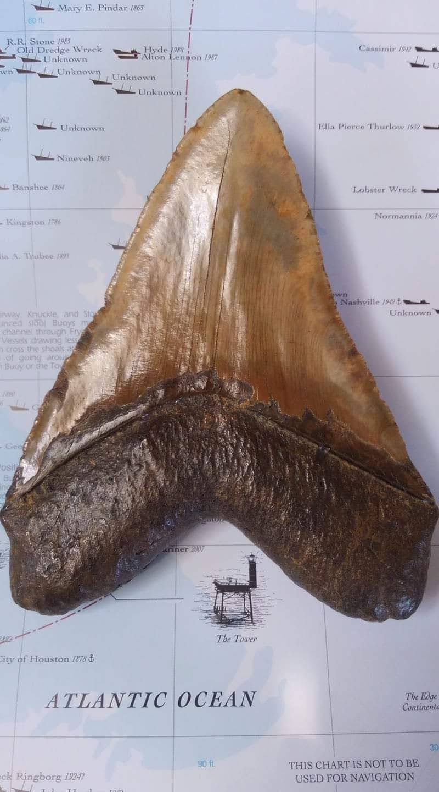
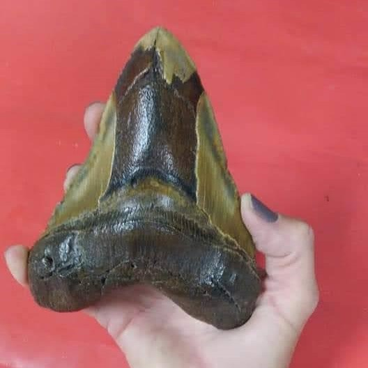
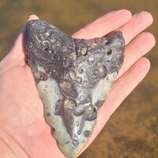
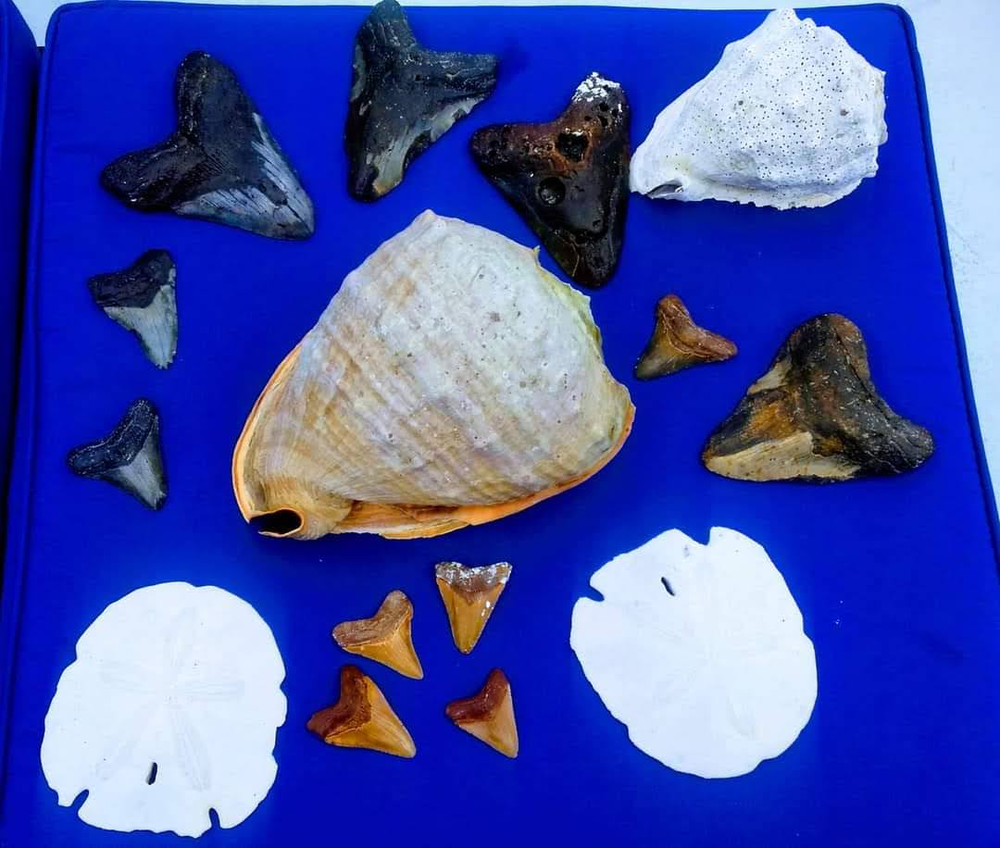

Atlantic Map Specimen
Distinctive tooth with strong display character and collector appeal.
Authentic · Ocean Recovered · Collector Grade
Recovered from the ocean floor by divers. Every fossil is genuine, photographed individually, and offered with a simple, direct buying experience.

Featured Collection
Real fossils. Individually photographed. Ready for collectors who want the actual specimen shown.

Distinctive tooth with strong display character and collector appeal.

Natural detail and preservation that make it stand out in a display case.

A look into the variety and character found in real dive-recovered fossils.
A bold, display-ready fossil with strong visual presence.
The Recovery Story
Deep Water Fossils is built around the appeal of real, ocean-recovered specimens. These fossils are not mass-produced replicas. Each one carries its own wear, shape, and history.
The goal is simple: show the actual fossil, present it clearly, and make it easy for collectors to buy with confidence.
Collector Confidence
The site is designed to answer the core buying questions immediately: Is it real? Is this the exact item? How hard is checkout?
Every featured fossil is shown directly so the buyer can see the actual specimen before purchase.
The layout is visual first, making the product the focus instead of forcing visitors through clutter.
The purchase path is meant to be short, clear, and trustworthy for direct-sale fossil buying.
Start Collecting
Browse featured fossils and move straight to the specimen that catches your eye.
Shop NowFAQ
Yes. The site is built around authentic fossil specimens, presented individually and visually.
That is the intended sales model: show the actual fossil and sell the actual fossil displayed.
Yes. The structure is static HTML and CSS so images, copy, and featured items can be updated with minimal overhead.